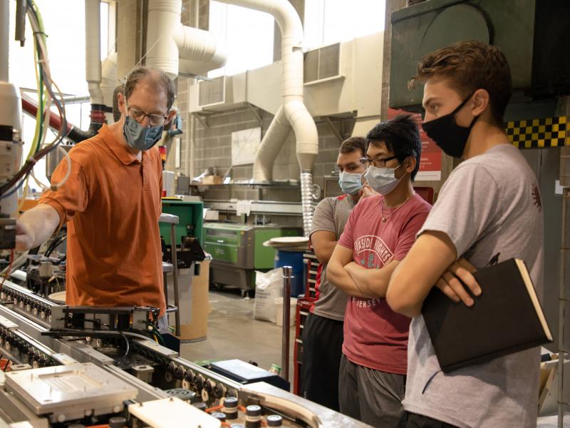

Completion of the B.S. in Information Technology and Web Science requires a total of 128 - 130 credit hours:
ITWS Core Requirements (24 - 26 credits)
The ITWS core requirements establish a solid foundation for applying ITWS to any discipline.
Concentration Requirement (44 credits)
The required concentration provides an opportunity for in-depth study of an ITWS application area.
Concentration options include arts, communication and networks, law, management information systems, medicine, psychology, and numerous others. In consultation with a faculty adviser, students may also design their own concentration through the selection of courses that match their individual interests.
Rensselaer Degree Requirements (60 credits)
The Rensselaer requirements ensure the degree’s breadth and its consistency with long-established Rensselaer traditions.
Master's students take one required course from each of the five core areas listed below to gain a breadth of IT knowledge. Advance core options are available.
Database Systems
Data Analytics
Software Design and Engineering
Management of Technology (Research track will not be required to take this core class.)
Human Computer Interaction
James Hendler Named Chair of ACM Technology Policy Council
James Hendler, the Tetherless World Professor of Computer, Web, and Cognitive Sciences at Rensselaer Polytechnic Institute, has been named chair of the Technology Policy Council for the Association for Computing Machinery (ACM). ...read more
Model Sets Minimum Restrictions Needed To Control COVID-19 Given Vaccination Rate
A new model, based on control theory, uses publicly available data to predict the minimal non-pharmaceutical intervention needed to control COVID-19 based on the vaccination rate in 381 metropolitan statistical areas — cities and their surrounding communities — across the country. ...read more
 Will Next Generation of Exascale Supercomputers Be Able To Work With Petascale Data?
Will Next Generation of Exascale Supercomputers Be Able To Work With Petascale Data?
George Slota has been has been granted a prestigious National Science Foundation Faculty Early Career Development (CAREER) award to develop approaches that match exascale supercomputers with petascale data. ...read more
App Developed at Rensselaer Can Help Guide COVID-19 Management on Any Campus
In the midst of the COVID-19 pandemic, as Rensselaer leaders prepared to bring students back to campus for the fall 2020 semester, they relied on a powerful algorithm to determine a testing schedule that, along with other tools, has helped maintain a safe environment on campus. That algorithm is now publicly available as a free online app. ...read more...read more
 Francine Berman Selected as a Fellow by the National Academy of Public Administration
Francine Berman Selected as a Fellow by the National Academy of Public Administration
Francine Berman, the Rensselaer Polytechnic Institute Hamilton Distinguished Professor of Computer Science, has been selected by the National Academy of Public Administration for inclusion in its 2020 Class of Academy Fellows, in recognition of her years of public-focused service and expertise....read more